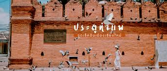

ประตูท่าแพ คือประตูเมืองด้านทิศตะวันออกของเวียงเชียงใหม่ สร้างขึ้นตั้งแต่สมัยพญามังราย เดิมชื่อ "ประตูเชียงเรือก" ปัจจุบันเป็นแลนด์มาร์คสำคัญ ลานกว้างด้านหน้าเป็นจุดจัดงานเทศกาล และเป็นจุดเริ่มต้นของถนนคนเดินท่าแพยอดนิยมในวันอาทิตย์